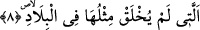

7. Direkleri (yüksek binaları) olan, İrem şehrine?
“İrem” kelimesi onların Âd kavminin ilk nesli olduklarını bildirmek (açıklamak) için
önceki “Âd” kelimesine atfedilmiştir (atf-ı beyân). Kelimenin başında bir muzâf
gizlidir. Takdîri “İrem oğulları” ya da “İrem halkı” şeklindedir. Çünkü “İrem” onların
yaşadıkları beldenin veya oturdukları toprağın adıdır. Onların evleri Umman ile
Hadramut arasında bulunuyordu. Buraları kum tepelerinin bulunduğu çöl bir bölge idi.
Âyetin izâfetle kırâati de bunu desteklemektedir.
el-Müfredât’ta der ki: “İrem”; taştan bina edilmiş işâret demektir. “Direkleri olan
İrem” ifâdesi minâre ve kabir şeklinde yüksek ve süslü sütunlara işârettir. Burada da
“işâretlerin sâhibi” mânâsına bir muzâf hazfedilmiştir.
“Zâtü’l-imâd” boyları direklere benzetilerek uzun boylu İremlilere. Ya da çadır ve
direk sâhibi İremlilere, demektir. Çünkü İrem halkı otlaktan otlağa giden çadırlarda
yaşayan bedevi bir halktı. Otlaklara kurdukları çadırlarını otlar kuruyup da rüzgarlar
esmeye başladığında sökerler ve evlerine geri dönerlerdi.
Ya da bu ifâde ‘yüksek bina sâhibi İrem’ demektir. İrem halkı gerçekten sütunlar
üzerine kurulmuş yüksek yüksek binalarda yaşayan kimselerdi. Onlar sütunları yontarlar
sonra yere dikerler ve üzerlerine köşk yaparlardı. Onların köşkleri ta uzaklardan
görülürdü. Ya da “sütunları olan İrem” demektir. Çünkü İremlilerin şehirleri sütunların
üzerinde yükselmiş binalardan oluşmaktaydı. Bu takdirde İrem onların yaşadıkları
beldelerin isimleri olmaktadır.
Süheylî (r.h.) der ki: “Direkleri (yüksek binaları) olan, İrem şehrine” ifâdesiyle
kasdedilen, Ceyrun b. Sa’d b. İrem’dir. Dimaşk şehrini mermerden sütunlar üzerine
kuran da odur. O şehre dört yüz bin veya kırk bin mermer sütun getirmiştir. Âyette geçen
“direkler”den maksad Dimaşk şehrinde üzerine evlerin kurulduğu bu direklerdir. Bu
direklere “ceyrun” deniyor ve bu isimle biliniyordu. Şehre Hz. İbrahim Halîl (a.s.)’ın
düşmanı Nemrud’un oğlu Dimaşk’ın ismine atfen “Dimaşk” ismi verilmiştir. Dimaşk
daha sonraları müslüman olmuş ve Şam’da İbrahim Camii’ni yaptırmıştır.” Herhalde en
doğru rivâyet bu olsa gerektir.
8. Ki ülkeler içinde onun benzeri yaratılmamıştı,
Bu cümle de İrem’in bir diğer sıfatıdır. Vücudlarının iriliği ve kuvvetlerinin
benzersizliği açısından yeryüzünde onların benzeri yaratılmamıştı. Bu insanların boyları
dört yüz arşın geliyordu. Onlardan birisi kocaman bir kayayı alır, üzerinde taşır ve bir
topluluğun üzerine atar ve onları helâk ederdi. Bu yüzden onlar “Bizden daha kuvvetli
kim var?” (Fussilet, 41/15) derlerdi.
Onların kuşlardan benzeri anka kuştur. Bu kuş Çin adalarında bulunur. Bir kanadı on